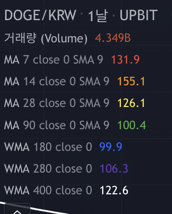

여러가지 지표가 있지만, 가장 기본적이면서 신뢰할 수 있는 지표는 이동평균선(Moving Average)입니다. 이동평균선은 기간별 평균 주가를 계산해서 선으로 이은 간단한 지표입니다.
- 장점
- 주가의 추세를 쉽게 알 수 있다
- 다른 지표보다 신뢰성이 높다
- 단점
- 과거의 가격으로 만든 후행성 지표
- 급등락하는 종목에 대해서는 적용하기 어려움
보통 5일선, 10일선, 20일선, 60일선, 120일선, 200일선으로 나눠서 봅니다.
- 단기매매선: 5, 10일선
- 심리선(단기추세): 20일선
- 수급선(중기추세): 60일선
- 경기선(장기추세): 120, 200일선


짧은 기간의 이동평균선은 단기 기간의 추세를, 긴 기간의 이동평균선은 장기 기간의 추세를 보여준다고 볼 수 있습니다. 기본적으로 단기 이평선이 중장기 이평선을 돌파하는 경우 추세가 바뀌는 것으로 보고 매매 시점을 봅니다. 이를 골든 크로스라고 하고, 반대의 경우에는 데드 크로스라고 합니다.


단기-중기-장기 이평선이 나란히 상승 중(정배열)이면 상승 추세가 지속되는 것으로 보고, 반대로 장기-중기-단기 이평선이 나란히 하락 중(역배열)이면 하락 추세가 지속되는 것으로 봅니다. 특히 장단기 이평선이 모두 수렴했다가 한쪽으로 크게 가격이 변동하는 경우에는 강한 추세가 생겨나는 것으로 볼 수 있습니다.


그리고 장기 이평선은 강한 저항선 또는 지지선이 됩니다. 올라가려고 하면 저항선이 되어서 올라가는 것을 막지만, 뚫리면 지지선이 되어 내려가는 것을 막아줍니다. 주가가 이평선을 반복해서 돌파하려고 하면 결국 뚫린다고 하는데요, 그래서 '주가가 올라갈 자리에서 안올라가면 떨어지고, 떨어질 자리에서 안떨어지면 올라간다’는 말이 있습니다.

그렇다면 골든 크로스에서는 무조건 매수하고, 데드 크로스에서는 무조건 매도하면 될까요? 그렇게 쉽지만은 않습니다. 중장기적으로 상승장에서 데드 크로스가 나온다면 건강한 조정으로 보고 매수에 들어갈 수 있습니다. 반대로 하락장에서 골든 크로스가 나온다면 데드캣(초단기 반등)으로 보고 매도 시점으로 볼 수 있습니다. 따라서 여러 시점에서 다양한 관점으로 확인해보는 것이 좋습니다.
추가로 이동평균선과 추세선을 같이 사용한다면 추세 전환을 조금 더 확실하게 파악할 수 있습니다.
그런데 저 기간은 어떻게 산정된 것일까요? 주식장이 주 5일이기 때문입니다. 1주, 2주, 1달, 3달, 6달 이런 식으로 계산된 것입니다. 그런데 코인 시장의 경우에는 쉬는 날이 없잖아요? 그래서 이 선을 그대로 써도 될 지 의문이 듭니다.

그래서 제 마음대로 5일 기준이 아니라 7일 기준으로 바꿔봤습니다. 물론 유의미한 차이는 없어보이긴 합니다.
정리해보겠습니다.
- 단기선은 단기 추세, 장기선은 장기 추세를 나타낸다
- 골든 크로스는 강세 전환, 데드 크로스는 약세 전환을 나타낸다
- 이동평균선이 정배열이면 상승추세
- 이동평균선이 수렴 후 펼쳐질 때 장기선 위에서 캔들이 형성될 경우 상승 기대
- 이동평균선이 역배열이면 하락추세
- 상승 추세 중에서 반복해서 20일 선 아래에서 캔들이 마감된다면 하락 위험
- 이동평균선을 자꾸 두드리면 뚫린다
- 이동평균선은 저항선이자 지지선이 된다 (특히 장기이평선)
- 반드시 다양한 시점에서 확인하자